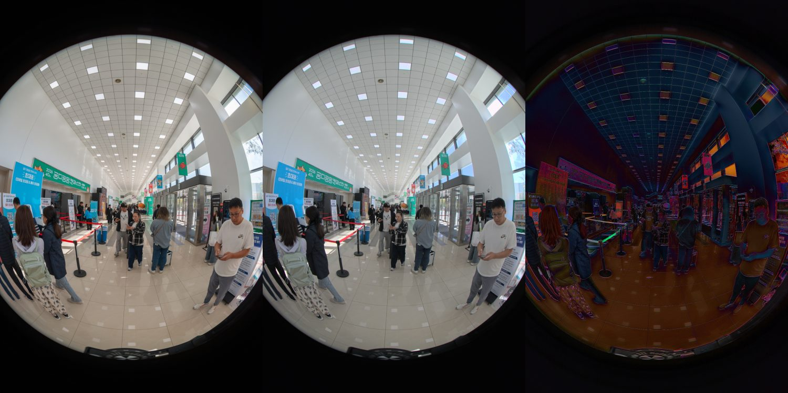
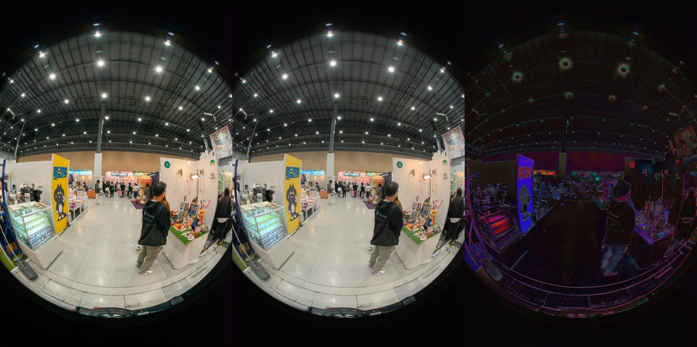
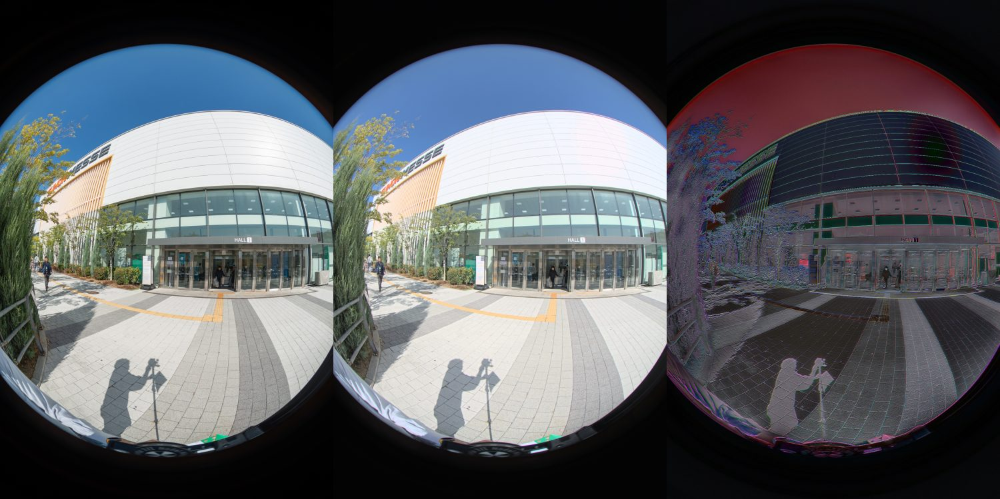
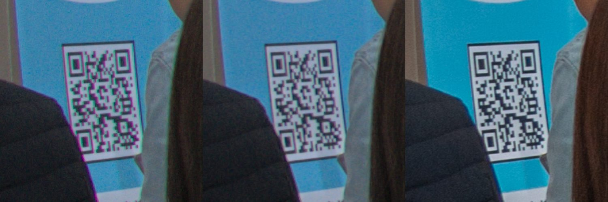
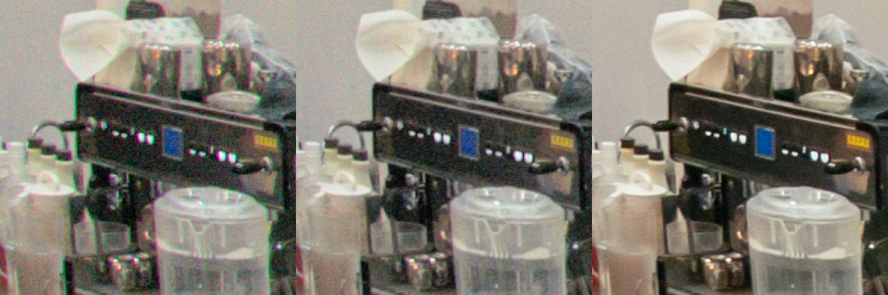

360 작업실에서 RAW 원본을 일괄 보정할 수 있는가
제40회 궁디팡팡 캣페스타(1774) 원본으로 확인 · 2026-11-12 · 저장소 코드는 바꾸지 않은 일회성 실험
확인한 것
원본 위치
- 오너가 말한
default/vr/backups는 NASDefault공유의VR/BACKUP/LOOK360 VR/20261031 [경기-수원]제40회 궁디팡팡 캣페스타(1774)/VR이다. 23개 장소에 NEF가 130장 있고, 사진마다 작업자가 저장한 Camera Raw 설정(.xmp)과 결과 JPG가 함께 있다. 그래서 작업자 결과를 정답지로 놓고 비교할 수 있었다. - 원본은 쓰지 않았다. xmp 130개와 대표 장소 4곳(1 입구, 2 로비, 3 포토존, 14 카페테리아)의 NEF·JPG만 사본으로 복사해서 썼다.
결과 요약
- 자동 묶음: 작업자가 보정한 값을 모으면 130장이 정확히 4묶음이다. 전시장 20곳의 110장은 모두 같은 값이고, 이 묶음이 ISO만으로 거의 그대로 갈린다(입구 50, 로비·포토존 200, 전시장 800).
4 고공전경은 40분 늦게 찍어서 폴더 순서로는 떨어져 있지만 같은 묶음이다. 스크롤로 멀리까지 찾아가며 고르던 일을 «촬영 설정이 같은 사진끼리 자동으로 묶어서 제안하고, 작업자는 확인만 하는 방식»으로 바꿀 수 있다.- 로비와 포토존은 촬영 설정이 같은데 작업자가 따로 보정했다. 그래서 자동 묶음은 제안으로만 띄우고, 나누거나 합치는 건 작업자가 하게 해야 한다.
- 보정 재현: 기본 톤 곡선은 카페테리아 한 곳으로만 맞추고 나머지 장소로 검증했다.
- 실내 3곳은 밝기 오차가 L 1.9~2.5다. 보정을 안 했을 때는 7~19, 다른 묶음 값을 잘못 적용했을 때는 6~13이었다. 묶음을 잘못 고르면 장소를 옮길 때 이질감이 바로 생긴다는 것도 숫자로 확인됐다.
- 실외 입구는 재현본이 정답보다 밝다(L 6.72). 밝은 영역 계수를 실내 사진으로만 맞춘 탓으로 추정하며, 아직 확인하지 못했다.
- 첫 실행에서는 색조(tint) 부호가 반대로 들어갔다. 고친 뒤 로비 색 오차가 13.16에서 6.4로 내려갔다.
- 색수차: 입구와 로비에서 각각 추정한 색수차 보정값이 같았다(R 0.9994, B 0.9997). 색수차는 렌즈 고유의 성질이라 렌즈당 한 번만 추정해서 모든 사진에 적용하면 된다.
- 카페테리아는 ISO 800 노이즈 때문에 사진 한 장만으로는 추정이 실패했다. 렌즈 공통값을 쓰니 정상적으로 보정됐다.
- 녹색 번짐은 작업자 수준까지 줄었지만, 보라 번짐은 아직 작업자 결과보다 10배 넘게 남아 있다.
- 다수 이미지 불러오기 (150장 환산): 썸네일 목록 약 7초, 편집용 미리보기 약 15초, NAS에서 원본 읽기 약 1.8분. 계산보다 NAS 읽기가 더 오래 걸린다.
남은 과제
실외 하늘 장면의 밝기, 보라 번짐 잔여, 샤프닝과 노이즈 감소, Adobe 프로파일과의 색감 차이(b 값이 일관되게 −2~−4)가 남아 있다. 다른 프로젝트 장면을 더 모아서 맞추면 줄일 수 있을 것으로 본다.
작업실에 붙이는 방향
작업실에는 이미 RAW 자동 현상, 스티칭, 장면별 톤 슬라이더가 있다. 그래서 기존 기능은 그대로 두고 그 옆에 «프로젝트 단위 일괄 보정 화면»을 붙이는 구조가 가장 자연스럽다. 화면 흐름은 썸네일 격자 → 자동 묶음 제안 → 묶음별 슬라이더 → 각 장소 스티칭에 반영 순서다. 자세한 근거는 아래 1~5절에 있다.
1. 지금 작업 방식과 원본 구성
- 원본: NAS
Default/VR/BACKUP/LOOK360 VR/20261031 [경기-수원]제40회 궁디팡팡 캣페스타(1774)/VR. 23개 장소, NEF 130장, 사진마다 Camera Raw 설정(.xmp)과 결과 JPG가 함께 있다. 카메라는 Nikon D800, 10.5mm 어안렌즈다. - 원본은 건드리지 않았다. xmp 130개와 대표 장소 4곳(1 입구, 2 로비, 3 포토존, 14 카페테리아)의 NEF·JPG만 사본 폴더로 복사해서 썼다.
- 작업자의 xmp 130개를 집계하면 보정값이 정확히 4묶음이다. 4~23번 20개 장소 110장은 모두 같은 값이다.
작업자의 보정 묶음과 촬영 EXIF
| 묶음 | 장소 | 장수 | 촬영 ISO·셔터 | Camera Raw 값 (색온도 5000K 공통) |
|---|---|---|---|---|
| A | 1 전시관 입구 (실외) | 6 | ISO 50 · 1/250~1/320 | 색조 +5 · 노출 +0.60 · 밝은 영역 −50 · 어두운 영역 +50 |
| B | 2 로비 | 9 | ISO 200 · 1/320 | 색조 +25 · 노출 +1.25 · 밝은 영역 −70 · 어두운 영역 +50 |
| C | 3 포토존 | 5 | ISO 200 · 1/320 | 색조 +22 · 노출 +0.50 · 밝은 영역 −70 · 어두운 영역 +50 |
| D | 4~23 (전시장 20곳) | 110 | ISO 800 · 1/100~1/125 | 색조 +8 · 노출 +2.00 · 밝은 영역 −50 · 어두운 영역 +50 |
모든 사진에 색수차 제거(자동)와 보라·녹색 프린지 제거(각 2)가 켜져 있다. 이번 프로젝트에서는 텍스처·명료도·디헤이즈를 0으로 두었다.
자동 묶음의 근거: ISO만으로 A / B+C / D가 그대로 갈린다. 4 고공전경은 다른 사진보다 40분 늦게 찍어서 폴더 순서로는 떨어져 있지만 같은 D 묶음이다. 작업자가 스크롤로 찾아가며 고르던 일을 «촬영 설정이 같은 사진끼리 자동 묶음 → 작업자는 확인만» 으로 바꿀 수 있다. B와 C는 EXIF가 같은데 작업자가 따로 보정했으므로, 자동 묶음은 «제안»으로 띄우고 나누고 합치는 건 사람이 하게 해야 한다.
2. 슬라이더 값 → 결과 재현
NEF와 xmp 값을 받아서 Camera Raw 결과 JPG를 다시 만들었다. 기본 톤 곡선(Adobe 프로파일에 해당)은 14 카페테리아 한 곳으로만 맞추고, 설정값이 모두 다른 나머지 3곳으로 검증했다.
| 장소 | 용도 | 재현 오차 L / a / b | 보정 안 했을 때 L | 다른 묶음 값을 잘못 썼을 때 L |
|---|---|---|---|---|
| 14 카페테리아 | 맞춤 | 1.91 / 3.44 / 3.60 | 19.29 | 11.95 |
| 2 로비 | 검증 | 2.47 / 2.57 / 3.84 | 15.18 | 6.64 |
| 3 포토존 | 검증 | 2.18 / 2.21 / 3.66 | 7.67 | 12.94 |
| 1 전시관 입구 (실외) | 검증 | 6.72 / 3.14 / 3.21 | 3.01 | 16.24 |
Lab 평균 절대 오차, 1228×1840 축소본, 장소별 전체 사진 평균. 기존 작업실 RAW 자동 현상(README 12절)의 실측 오차는 L 3~4대였다. «다른 묶음 값을 잘못 썼을 때»가 크다는 건, 묶음을 잘못 고르면 장소 간 이질감이 바로 생긴다는 뜻이다.
- 실내 3곳은 오차가 L 2 안팎이라 눈으로 구분하기 어렵다.
- 실외 입구는 결과가 정답보다 밝다. 밝은 영역 처리 계수를 실내 1곳으로만 맞춘 탓으로 추정한다. 실외 장면을 맞춤에 넣으면 줄어들 것으로 본다(미검증).
- 1차 실행에서는 색조(tint) 부호가 반대로 들어가서 로비·포토존 색 오차(a+b)가 13.16·11.87이었다. 부호를 고친 뒤 위 값이 됐다.



3. 색수차·프린지 제거
- 가로 방향 색수차는 R·B 채널을 G에 맞추는 반경 배율로 자동 추정했다. 1 입구와 2 로비에서 각각 추정한 값이 R 0.9994 · B 0.9997로 같았다. 색수차는 렌즈 고유의 성질이라 «렌즈당 한 번 추정 → 모든 사진에 적용»이 맞다.
- 14 카페테리아는 ISO 800 노이즈 때문에 사진 단독 추정이 실패했다(배율 1.0). 렌즈 공통값을 적용하니 정상적으로 보정됐다.
- 추정 한 번에 약 60~70초가 걸렸다(단순 전수 탐색). 렌즈당 1회라 일괄 작업에서는 문제가 없지만 최적화할 여지가 크다.
| 경계 부근 보라 / 녹색 화소 수 | 보정 전 | 색수차 보정 | + 프린지 제거 | + 색 노이즈 감소 | 작업자 |
|---|---|---|---|---|---|
| 2 로비 ODK_3382 | 60,161 / 36,803 | 51,968 / 6,966 | 27,562 / 1,645 | - | 1,097 / 4,052 |
| 14 카페테리아 ODK_3445 (렌즈 공통값) | 79,702 / 169,565 | 56,587 / 53,969 | 29,338 / 20,195 | 17,049 / 12,995 | 1,446 / 18,126 |
7360×4912 원본 해상도, 밝기 경계 근처에서 채도가 높은 보라·녹색 화소 수. 나뭇잎 같은 실제 녹색도 섞이는 지표라 절대값보다 감소 비율로 읽어야 한다. 녹색 번짐은 작업자 수준까지 줄었지만 보라 번짐은 아직 10배 이상 남는다.


4. 다수 이미지 불러오기
| 항목 | 실측 | 150장 환산 |
|---|---|---|
| NAS → 로컬 NEF 읽기 | 106 MB/s (77MB 1장 0.72초) | 약 1.8분 (11.5GB) |
| NEF 내장 썸네일 추출(목록·선택 화면용) | 장당 44ms | 약 7초 |
| 편집 미리보기 현상(1200px) 워커 4개 | 장당 0.10초 | 약 15초 |
| 원본 해상도 현상 | 장당 4~5초 | 워커 4개 약 3분 |
작업실 서비스가 같은 PC에서 돌고 있어서 우선순위를 낮추고 스레드를 제한해서 쟀다. 병목은 계산이 아니라 NAS 읽기다. 실제 구현에서 rawpy는 fork 대신 spawn 방식 프로세스로 돌려야 한다(교착 경고 확인).
5. 작업실에 넣는다면
- 이미 있는 것: 작업실(
pano-stitcher)에는 NEF 자동 현상, 선형광 스티칭, 장면별 톤 슬라이더(노출·밝은 영역·어두운 영역·채도·색온도·색조)가 이미 있다(IND-8691·8692). 기존 «RAW 장면» 흐름을 깨지 않고 옆에 붙일 수 있다. - 새로 필요한 것:
- 프로젝트 단위 «일괄 보정» 화면: 모든 장소의 사진을 썸네일 격자로 한 번에 불러오고, EXIF(ISO·셔터·촬영 시각)로 묶음을 자동 제안한다. 작업자는 묶음을 나누거나 합치고, 묶음마다 슬라이더를 한 번만 조절한다.
- 묶음 단위 보정값 저장 → 각 장소의 스티칭·최종 렌더가 그 값을 쓴다. 장소 간 이질감을 막는 핵심이 이것이다.
- 렌즈 프로필: 색수차 배율을 렌즈당 한 번 추정해 저장하고, 보라·녹색 프린지 제거를 붙인다.
- 텍스처·명료도·디헤이즈·샤프닝·색 노이즈 감소 슬라이더.
- Camera Raw xmp 읽기: 작업자가 이미 만든 xmp가 있으면 그 값을 그대로 가져온다. 이번 실험이 이 방식으로 동작했다.
- 남은 위험: 실외 하늘 장면의 밝기 재현, 보라 번짐의 마지막 잔여, Adobe 프로파일 색감과의 차이(b 축 약 −2~−4 일관 편차)는 장면을 더 모아서 맞춰야 한다.
실험 스크립트·수치: kabkee-main /tmp/look360-paperclip-artifacts/studio-raw-edit/ (crs_poc.py, out/tone_eval.json, out/ca_eval.json, xmp-table.tsv, exif-groups.txt)